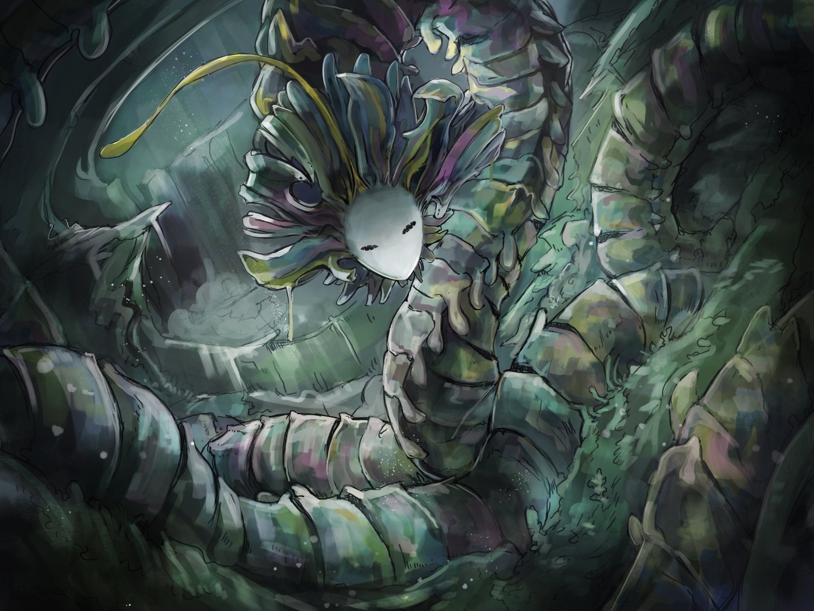
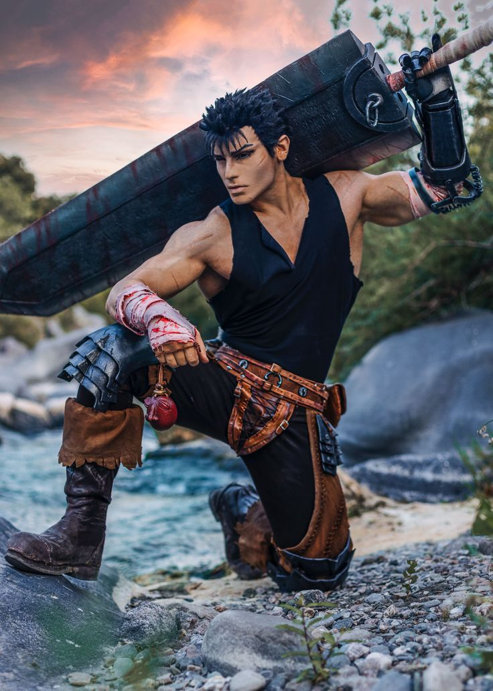
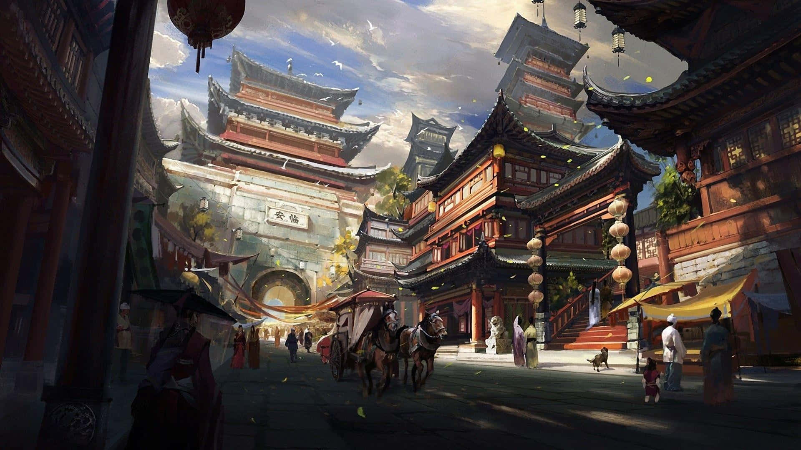
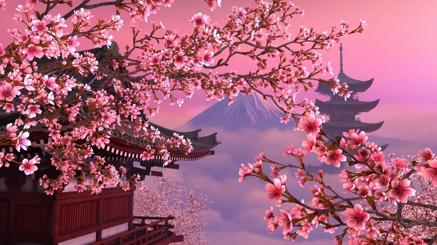

Strona Główna
Co to są mangi?
Manga to wyraz pochodzący z języka japońskiego (漫画), który oznacza "komiczne obrazy". Współcześnie jednak mówi się tak na
japońskich komiksów i powieści graficznych, które stanowią bardzo ważny element japońskiej kultury oraz mają ogromną liczbę fanów
na całym świecie.
Znaczenie kulturowe mang:
Mangi mają ogromne znaczenie kulturowe na całym świecie nie tylko jako forma rozrywki, ale także jako narzędzie edukacyjne,
środek wyrazu artystycznego i kulturowy most między Japonią a resztą świata. Oto, jak ich wpływ rozkłada się na różne sfery:
Edukacja i rozwój społeczny
⦿Mangi edukacyjne (gakushū manga) - uczą historii, matematyki, biologii czy filozofii w przystępny sposób. Przykłady: “Manga Guide to Physics” czy “Historie Japonii w mangach”.
⦿Problemy społeczne - wiele tytułów porusza tematy takie jak depresja, bullying, choroby psychiczne czy LGBTQ+. Przykłady: “A Silent Voice” (nękanie i niepełnosprawność), “My Brother’s Husband” (akceptacja i rodzina).
⦿ Motywacja i samodoskonalenie - sportowe i obyczajowe mangi, jak “Haikyuu!!” czy “Blue Period”, uczą wytrwałości, pracy zespołowej i pasji.


Fantasy i eskapizm
⦿Światy alternatywne (isekai) - pozwalają odbiorcom na ucieczkę od rzeczywistości i eksplorację nowych światów. Przykłady: “Re:Zero”, “Sword Art Online”.
⦿Kultura otaku i cosplay - fantasy manga inspiruje ogromne społeczności fanowskie, konwenty, cosplaye, fanarty i fanfiki.
⦿Mitologia i folklor - wiele mang czerpie z japońskiej i światowej mitologii, ucząc jednocześnie o innych kulturach (np. “Noragami”, “Inuyasha”, “Mushishi”).


Kultura globalna i tożsamość
⦿Miękka siła Japonii (soft power) manga (i anime) są jednym z głównych narzędzi globalnej promocji japońskiej kultury.
⦿Interkulturowość mangi są tłumaczone na dziesiątki języków i wpływają na lokalnych twórców komiksów, gier, mody i filmu.
⦿Wymiana kulturowa manga buduje pomosty międzykulturowe, np. popularność japońskich stylów życia (kawaii, minimalizm, zen).


Sztuka i narracja
⦿Unikalny styl graficzny wpływa na rozwój sztuki cyfrowej i rysunku komiksowego na całym świecie.
⦿Narracja wizualna mangi często wykorzystują nowatorskie podejścia do opowiadania historii, kadrowania, symboliki.
⦿Inspiracja dla innych mediów wiele filmów, seriali, gier i powieści czerpie z mangi lub powstaje na jej podstawie.